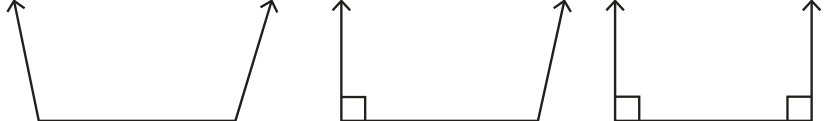
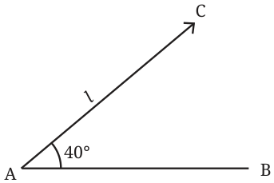
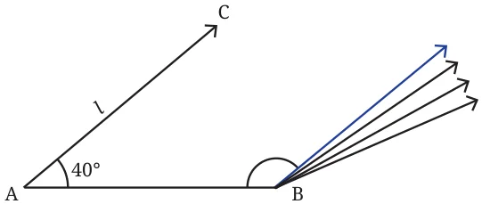

- Construct triangles for the following measurements:
- \(75^{\circ}\), 5 cm, \(75^{\circ}\)
- \(25^{\circ}\), 3 cm, \(60^{\circ}\)
- \(120^{\circ}\), 6 cm, \(30^{\circ}\)
Do triangles always exist?
Do triangles exist for every combination of two angles and their included side? Explore.
As in the case when we are given all three sides, it turns out that there is not always a triangle for every combination of two angles and the included side.
Find examples of measurements of two angles with the included side where a triangle is not possible.
Let us try to visualise such a situation. Once the base is drawn, try to imagine how the other sides should be so that they do not meet. Here are some obvious examples.

If the two angles are greater than or equal to a right angle (\(90^{\circ}\)), then it is clear that a triangle is not possible.
Now we make one of the base angles an acute angle, say \(40^{\circ}\). What are the possible values that the other angle should take so that the lines don’t meet?

It is clear that if the line from B is "inclined" sufficiently to the right, then it will not meet the line \(l\).
- Try to find a possible \(\angle B\) (marked in the figure) for this to happen.
- What could be smallest value of \(\angle B\) for the lines to not meet?

The blue line is the line with the least rightward bend that doesn’t meet the line ‘\(l\)’
Visually, it is clear that the line that creates the smallest \(\angle B\) has to be the one parallel to \(l\). Let us call this parallel line m.
Can you tell the actual value of \(\angle B\) be in this case?
[Hint: Note that AB is the transversal.]
We have seen that when two lines are parallel, the internal angles on the same side of the transversal add up to \(180^{\circ}\). So \(\angle B = 140^{\circ}\).
So, for what values of \(\angle B\), does a triangle not exist? Does the length AB play any part here?
From the discussion above, it can be seen that the length AB does not play any part in deciding the existence of a triangle. We can say that a triangle does not exist when \(\angle B\) is greater than or equal to \(140^{\circ}\).